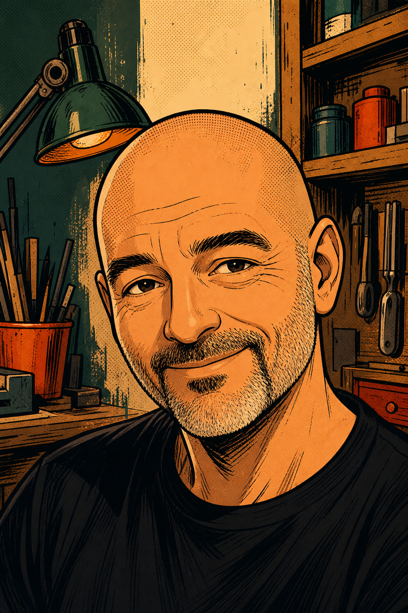

Werkstatt · Natur · Technik
Altes bewahren.
Neues entdecken.
Willkommen bei Oppis Hobbys: Geschichten aus der Motorradwerkstatt, kleine Wunder aus der Makro-Welt und praktische Projekte rund um Linux und Computer.
Meine Projekte ansehen
02 · Draußen
Makro-Insektenfotografie
Ganz nah dran
Die kleinen Bewohner von Garten, Wiese und Wald zeigen aus der Nähe erstaunliche Formen und Farben.
Makro-Galerie
folgt
folgt
03 · Aktuelles Projekt
Honda CB250G restaurieren
1976
Honda CB250G
Mein aktuelles Projekt ist die Restaurierung einer Honda CB250G von 1976, in Hawaiian Blue Metallic.
Zum Projekt mit Bildergalerie04 · Persönlich
Über mich
Ich bin Horst – neugierig auf Technik, begeistert von klassischen Motorrädern und gern mit der Kamera in der Natur unterwegs.
